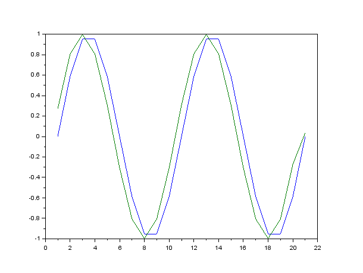

Description
The DFT method is based on the fact that a delay in the time domain is the same as a modulation in the frequency domain:
However, since it is based on the DFT, if the input signal is not periodic, leakages related side effects can occur (see comparison below).
The interpolator method is based on a cubic cardinal spline interpolator.
Example
t = (0:1/20:1)'; x = sin(4*%pi*t); y = frac_delay(x, 0.5); // Delay by 1/2 sample clf(); plot([x y]); |  |  |

Example of fractionnal delay
Comparison of the two available methods

Comparison between DFT and interpolator based fractionnal delay
As one can see, the DFT method has some ringing at the end of the signal ; this is due to spectral leakages introduced by the fact that the signal values are different at the begin and at the end (the DFT suppose that the signal is peridic).